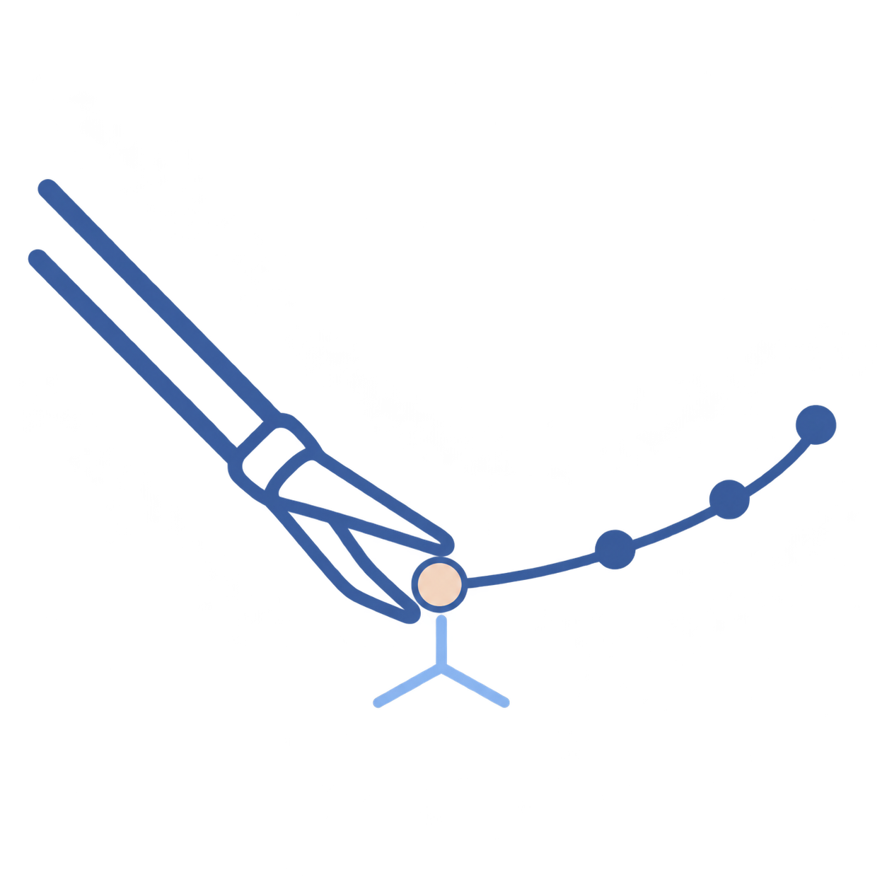

A large-scale surgical dataset
4,549 action clips, 519,642 frames, and 1.4M contact-aware 2D/3D point trajectories across robotic and manual surgery.

SurgTAP-3D Read paperA Large-Scale Cross-Surgery Video Dataset
with Contact-Aware 3D Motion Tracking
Accepted to IEEE Transactions on Robotics (T-RO)
1 The Chinese University of Hong Kong, Hong Kong SAR, China 2 University of Liverpool, Liverpool, U.K. 3 School of Mechanical Engineering, Shanghai Jiao Tong University, Shanghai, China 4 Department of Electronic and Computer Engineering, The Hong Kong University of Science and Technology, Hong Kong SAR, China 5 College of Control Science and Engineering, Zhejiang University, Hangzhou, China † Corresponding author
4,549 action clips, 519,642 frames, and 1.4M contact-aware 2D/3D point trajectories across robotic and manual surgery.
Contact prompting, active-tool segmentation, dynamic bundle adjustment, and global 4D refinement for uncalibrated monocular video.
2D and 3D point-tracking evaluation for both instrument and tissue motion across SurgT, SurgPose, and STIR.
Understanding 3D scene dynamics in minimally invasive surgery (MIS) is a fundamental step toward enabling physically intelligent and autonomous surgical systems. However, existing public datasets are largely confined to ex-vivo or simulated environments, offering limited scalability and diversity in real-world clinical scenarios. Moreover, current annotations typically focus on either tissue or instruments alone, overlooking the critical contact dynamics that govern tool–tissue interactions. This gap restricts the development of downstream applications such as augmented reality guidance and autonomous surgery driven by vision-language-action (VLA) models or world models, which demand large-scale, high-quality 3D supervision.
In this work, we construct SurgTAP-3D, a large-scale in-vivo pseudo-3D surgical motion tracking dataset and benchmark, comprising 520K frames, 4,549 action clips, and 1.4M 2D/3D point trajectories from diverse robotic and manual procedures under unified action categories. To make such annotation scalable, we design the first unified framework for Surgical 3D Point Tracking that converts uncalibrated monocular surgical videos into structured 4D annotations through contact-region prompting, active-tool segmentation, dynamic bundle adjustment, and global 4D refinement. This pipeline adapts foundation priors to surgical videos and produces temporally consistent trajectories, pseudo-scale geometry, camera poses, and instrument masks. The dataset captures realistic challenges inherent to surgical environments, including occlusions, smoke, bleeding, and rapid instrument motion.
Furthermore, we establish a comprehensive benchmark to evaluate 3D point tracking performance across the SurgPose, SurgT, and STIR datasets, covering both instrument and tissue tracking scenarios. We also demonstrate downstream applications such as instrument displacement estimation, deformable surface reconstruction, and fine-tuning foundation models, highlighting the practical utility of our dataset and framework. Extensive experiments and analysis show the strong robustness and effectiveness of our dataset and annotation framework, for 3D surgical point tracking, reconstruction applications, and surgical action understanding, addressing an important limitation in real-world 3D surgical motion data.
In-vivo surgical video across robotic and manual procedures, organized into five action classes.
2D & 3D point trajectoriesSynchronized instrument and tissue motion
Depth & scene geometryTemporally consistent, pseudo-scale reconstruction
Camera intrinsics & posesGeometry in camera and global coordinates
Active-tool segmentationInstrument masks and contact-region prompts
Confidence & visibilityIndicators for filtering trajectories downstream
| Type | Dataset | Surgery | Clips | Frames | Avg. frames |
|---|---|---|---|---|---|
| Total | 4,549 | 519,642 | — | ||
Action classes, instruments, procedures, and trajectory statistics.
Aligned 3D trajectories, PCA, and instrument distributions.
under the unified five-action taxonomy.
Switch between surgical actions and view their synchronized trajectories.
Each view follows the same surgical interaction.
Track the tool–tissue interaction during vessel clipping in image, camera, and world coordinates.
Contact prompts and foundation priors, followed by geometric and temporal refinement.
Geometric refinement provides consistency.
Keep tracked points on the segmented instrument surface.
Preserve rigid shaft motion while allowing articulated joints to move.
Refine depth and 2D trajectories through flow consistency.
Regularize temporal acceleration to reduce unstable motion.
Tissue and instrument tracking on SurgT, SurgPose, and STIR.
| Method | AJ 3D ↑ | APD 3D ↑ | OA ↑ |
|---|
AJ Average Jaccard
Tracking accuracy with visibility
APD Average Points within Distance
Point localization accuracy
OA Occlusion Accuracy
Visibility prediction accuracy
Selected results from Table IV, in %. 3D evaluation uses stereo-derived reference trajectories; protocols and full comparisons are in the paper.
Mean consistency indicators across the five action classes.
These indicators assess pseudo-annotation consistency, rather than absolute 3D accuracy.
Reconstruction, instrument displacement, and tracker fine-tuning.
useful signals for downstream tasks.
Training on SurgTAP-3D improves 2D tracking on SurgT and SurgPose.
| Model / setting | SurgT | SurgPose | ||
|---|---|---|---|---|
| AJ 2D ↑ | APD 2D ↑ | AJ 2D ↑ | APD 2D ↑ | |
| CoTrackerv3 | 73.32 | 79.02 | 49.40 | 61.84 |
| CoTrackerv3 + fine-tuning | 74.14 | 80.25 | 50.99 | 62.53 |
| DELTAv2 | 73.75 | 79.21 | 51.20 | 61.97 |
| DELTAv2 + fine-tuning | 74.57 | 80.11 | 52.75 | 62.86 |
Dataset curation, annotation methods, and evaluation protocols are detailed in the paper.
Read the manuscript ↗Dataset & code
Release links will be added when available.
Visible tool–tissue interaction regions are marked and used to initialize trajectories. This refers to visual interaction annotations; it does not imply force sensing or a contact-physics model.
The dataset provides reconstructed pseudo-3D trajectories and pseudo-scale geometry from monocular videos. Confidence and visibility indicators help identify trajectories suitable for downstream use.
Long instrument disappearance, large occlusion, and fast tool motion can produce drift or unstable tracks. The paper includes analysis of challenging cases, including smoke and bleeding.